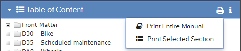

When viewing a publication in Pinpoint, the
Bulk Print feature
allows you to print the entire publication or selected pages. The
Bulk Print sub-menu appears when you click
the
Bulk Print icon in the
Table of Content bar.

Bulk Print Sub-Menu Example
Depending on configuration, there can be two printing options available:
The bulk-print operation runs in the background. The
Bulk Print
icon changes to a progress spinner, and the bulk-print options are disabled until the
selected operation completes.
After the operation completes, the print output is
downloaded as a PDF file.
Note: The bulk-print process may take a long time to complete,
depending on the scope of documents to print. The performance may be degraded if multiple
users are performing bulk-printer operations simultaneously. Your administrator can
configure the number of concurrent threads for performing bulk-print operations.
Administrators, refer to the Flatirons Pinpoint Configuration Guide for more
information.